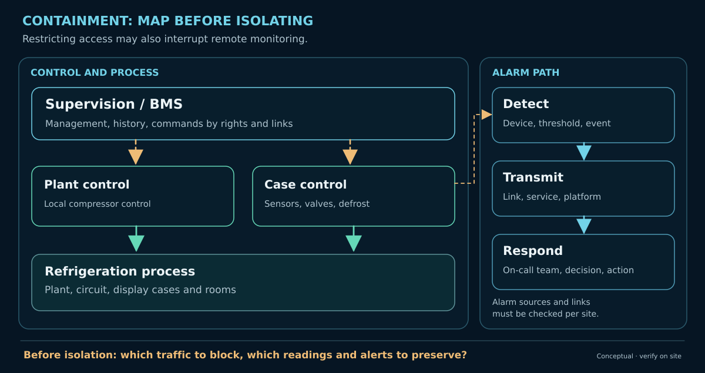
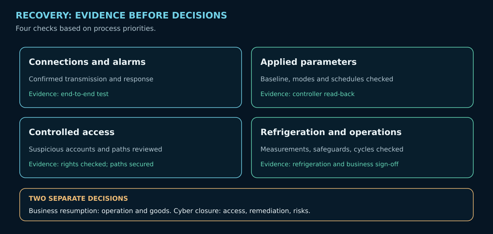

Cyber Resilience in Commercial Refrigeration: Managing an Incident, Protecting the Process
During a cyber incident: protect stored products, maintain essential functions, restore a trustworthy configuration and confirm stable refrigeration.
On this page
When a store opens, several refrigerated display cases show abnormal temperatures. Defrost schedules appear to have changed. The refrigeration technician must restore operation, the operator must protect the goods, and the cybersecurity team must establish whether access has been compromised. The urgency requires action before every cause is known.
Following the French incidents of October 2026, further disruption was reported in several European countries on 2 November. The consequences varied by store: some restored operations quickly, while others had to withdraw products. Public information does not establish a common attack vector across all these events. Sources: CERT-FR, Reuters, 2 November 2026.
The lxrider guide to securing refrigeration supervisory systems explains how to protect remote access while retaining maintenance and alarm reporting. Here, we face a different situation: an incident is suspected or confirmed. What decisions will protect refrigeration, restore service and establish that operations remain stable?

1. Assess the consequences and protect the installation
The first assessment concerns refrigeration itself: which display cases are affected, what is the condition of the refrigeration plant, which safeguards are working, and are alarms reaching the on-call team? An abnormal reading may arise from the physical process, a sensor, a setting or an unauthorized intervention. Its cause remains to be established.
The refrigeration technician checks the equipment and takes the measures needed to restore safe operation. This includes checking setpoints and active schedules, controller behavior and safeguards. The installation must then be observed through the relevant operating cycles to detect further drift.
The operator makes decisions about stored products. The operator considers available temperature histories, product characteristics and applicable food-safety rules. A single air-temperature reading cannot, by itself, establish whether goods are safe to retain.
In parallel, the cybersecurity team examines signs of compromise. It correlates access paths, accounts, logs and suspicious modifications. Findings from the refrigeration technician inform that investigation. Urgent measures to protect the physical process take priority.
2. Coordinate interventions and decisions
A network change may disrupt remote monitoring. Restoring parameters may affect control. A product-safety decision may require shutting down a display case that is still operational. Every intervention must be understood by the people who will bear its consequences.
The operator coordinates the response and identifies decision-makers. The refrigeration technician validates actions on the installation. The cybersecurity team prepares containment and remediation with the network lead and relevant service providers.
A short situation report brings together the essentials: affected equipment, refrigeration still available, functioning alarms, planned intervention, person responsible and method of verification. Important decisions are timestamped. On-call contact details and a backup communication channel must remain available.
If several stores are affected, priorities depend on the consequences for products and equipment, as well as the actual capacity to intervene. Notification duties and management reporting are handled according to the organization's status and circumstances.
3. Contain the incident while preserving essential functions
CERT-FR recommends removing management interfaces exposed directly to the Internet. When compromise is suspected, containment must also address sessions, accounts and other usable paths.
Before disconnecting anything, identify the functions carried by the affected connection. The same router may support both maintenance and alarm transmission. Elsewhere, these services may use separate paths. A restriction may prevent remote commands while leaving local controllers running; it may also deprive the on-call team of temperature readings and alerts.
The decision should be prepared with the network lead, refrigeration technician and operator: which access to suspend, expected consequences, replacement monitoring and checks after the change. Fieldbus disconnections, restarts and resets require assessment for the specific equipment concerned.

The cybersecurity team preserves logs and configurations useful to the investigation, recording their origin and collection times. Essential actions needed to keep the physical process safe must not be delayed by this collection.
4. Maintain refrigeration in degraded mode
Supervision, local controllers, refrigeration production and alarms may behave differently. Some controllers retain local functions after losing a connection; others rely on shared settings or synchronization. The refrigeration technician establishes what remains operational on the actual site.
Fallback monitoring may consist of rounds, local readings or separate sensors. Its reliability depends on sensors, communications, inspection frequency and staff availability. A second display fed by the same measurements may reproduce incorrect information.
Degraded operations must answer four questions: which equipment remains under control, how will drift be detected, who will intervene, and at what point must goods be protected or withdrawn? Thresholds and response times are defined by refrigeration professionals and the operator according to the installation and products.
These arrangements remain in place until reliable monitoring is restored. They may also be needed during checks following restoration.
5. Restore a trustworthy configuration and address the compromise
Defrost schedules, a setpoint or an alarm threshold may remain altered after suspicious access has been closed. An effect on the physical process may continue after digital containment. The refrigeration technician must therefore check active parameters and schedules that could act later.
Backups help recover a reference configuration. They must identify the equipment, versions and parameters concerned: supervisory system, controllers, setpoints, defrost cycles and alarms. A recent copy may already contain altered values. The chosen baseline must be compared with the store's actual requirements and approved before values are written.
The direction of parameter transfer is manufacturer-specific. On Danfoss AK-SM 800, Upload retrieves controller parameters into the supervisory database; Download sends supervisory-system parameters to the controllers. On XWEB EVO v5.6.0, Read retrieves device parameters, Import loads a previously saved set into the table, and Write sends the displayed values to the selected devices. A parameter set imported into XWEB still has to be written to the controllers before it takes effect there. Before writing, the refrigeration technician checks the model, version, target devices and values, then reads back the parameters actually applied. Danfoss AK-SM 800 · XWEB EVO v5.6.0, pp. 23–26.
Where possible, the cybersecurity team preserves a copy of the suspicious state for investigation. It addresses compromised accounts, remaining access paths and identified weaknesses. Restoration followed by renewed exposure would leave the door open to another incident. If the initial cause remains unknown, restrictions and compensating controls are maintained or adjusted according to the risk.
The restored configuration must both operate correctly on the physical process and remain protected against further unauthorized changes.
6. Verify stability and decide when to resume normal operations
Return to service must be confirmed over time, across operating cycles relevant to the installation. The team checks four complementary dimensions:
- Refrigeration and equipment: plant, controllers, sensors, safeguards and temperatures observed across suitable cycles.
- Applied parameters: setpoints, defrost schedules, modes and alarms read back and compared with an approved baseline.
- Monitoring: measurements available and alerts received and acted upon during authorized tests.
- Digital access: suspicious paths addressed, permissions reviewed and residual risks identified.

The refrigeration technician confirms operational stability. The operator decides when to resume business operations and what to do with the goods. The cybersecurity team documents remediation, any residual risks and the conditions for closing the incident. These decisions may occur at different times.
After the immediate response, a lessons-learned review examines backup quality, alarm reception, availability of contacts and the effects of containment measures. The purpose is to prepare for a faster response to a future incident.
Conclusion
A cyber incident affecting refrigeration supervision brings several disciplines together around one installation. Access-control changes may affect alarms. Parameters may continue to influence the process after access has been cut. Restoration requires on-site verification.
The priority is to protect people and goods, restore refrigeration and confirm stable operation. Cyber investigation and remediation support that recovery by reducing the likelihood of another compromise.
Decisions rest on practical evidence: a controlled process, a verified configuration, functioning alerts and secured access.
Sources and limitations
- CERT-FR — CERTFR-2026-ALE-012, last updated 16 October 2026: compromises and recommendations for protecting access.
- Reuters — European retailers hit by supermarket fridge hack, 2 November 2026: reported European incidents and operational consequences.
- ANSSI — Anticipating and managing a cyber crisis (French) and Preparing remediation (French): coordination and compromise remediation.
- ANSSI — Industrial Systems Cybersecurity: Detailed Measures, v2.0, 2025 (French): continuity, degraded modes and backups.
- Danfoss — AK-SM 800 Series, User Guide, ref. BC316842192932en-001001 and Copeland/Dixell — XWEB EVO, v5.6.0, pp. 23–26: reading, importing and writing parameters.
- NIST — SP 800-61 Rev. 3, 2025 and SP 800-82 Rev. 3, 2023: incident response and OT-specific precautions.
Documentary analysis with a fictional opening scenario. Equipment behavior, safeguards and recovery conditions depend on the actual models, versions, settings and wiring. Refrigeration and food-safety decisions belong to the competent professionals and operators. No forensic examination of a specific installation or independent refrigeration validation is claimed.
Version 1.7 — 3 November 2026. © 2026 lxrider — All rights reserved for the original text.